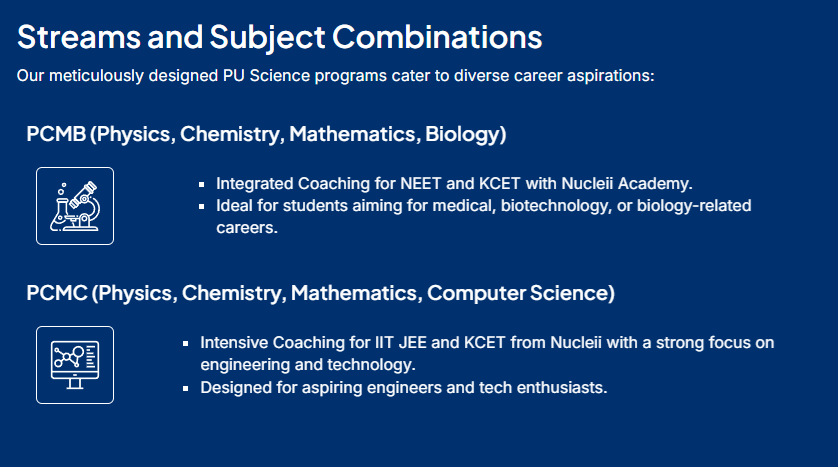

|  | 12th PCM (Physics, Chemistry, Maths) students are eligible for a vast number of entrance exams, primarily for Engineering, but also for Research, Defence, Architecture, and pure Sciences, including major national tests like JEE Main/Advanced, BITSAT, CUET, NEST, IAT, NDA, and various state-level exams (MHT CET, WBJEE, etc.) and private university tests (VITEEE, SRMJEEE, COMEDK). The exact count depends on the student's field of interest, but it easily spans over a dozen key exams, offering diverse paths beyond engineering.
For Engineering & Architecture
National Level: JEE Main & Advanced (IITs, NITs, IIITs), BITSAT (BITS Campuses), CUET (Central Universities), VITEEE (VIT), SRMJEEE (SRM), COMEDK (Karnataka), KEAM (Kerala).
For Research & Pure Sciences
IAT (IISER Aptitude Test): For IISERs, IISc.
For Defence & Other Fields 12th PCB (Physics, Chemistry, Biology) students are eligible for numerous entrance exams, primarily for Medicine (NEET, AIIMS, JIPMER), but also for Agriculture (ICAR), Research/Pure Sciences (NEST, IISER), Pharmacy (BITSAT, BPharm exams), Nursing (AIIMS BSc Nursing), and even some other fields like Law (CLAT) or Design (NIFT, NATA), depending on their interests and other subjects taken, opening doors to careers in healthcare, research, agriculture, and more.
Key Entrance Exams for PCB Students: Research & Pure Sciences: Agriculture & Allied Fields: ICAR AIEEA: For Agriculture, Horticulture, Forestry courses. Pharmacy:
BITSAT (Biology Stream): For B.Pharm at BITS Pilani. |